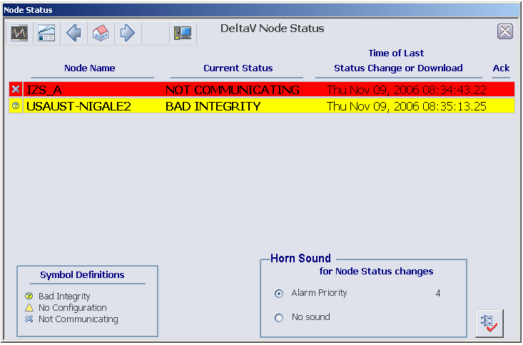

The DeltaV Operate environment
The DeltaV system provides an environment in which the DeltaV Operate software operates effectively with the DeltaV software. This environment provides the following features:
a default screen layout
quick picture navigation
module viewing information through Faceplate picture, Detail picture, and Trend picture
alarm direct access
history lists
templates
It is strongly recommended that you use DeltaV Operate in the DeltaV environment. Although you are not prevented from redesigning the environment, only the DeltaV environment is supported.
DeltaV Operate does not support the Large Fonts setting in the workstation Display Properties dialog. Make sure the font size is set to Small Fonts.
Using Multiple Monitors
DeltaV workstations are available with multiple monitors. Multiple monitors work together and are driven by the same workstation. You can place the monitors side-by-side for a horizontal orientation or one on top of the other for a vertical orientation. Multiple monitors enable operators to view multiple process graphics or applications at the same time; each screen displaying a different item. For example, you can display the overview picture on one monitor and display process graphics on the other monitor, or you can display pictures on one monitor and run an application, such as Process History View, on the other.
Running DeltaV Operate on a multiple monitor workstation:
doubles the number of alarms shown in the alarm banner. The alarm banner is displayed across the Primary and Secondary monitors.
enables operators to drag faceplates and other pictures from one monitor to the other.
enables operators to launch pop-up pictures, such as faceplates, from one monitor and display them on another monitor.
adds a additional sets of pictures to support the additional monitors (for example, another toolbar, separate main picture history lists, and an additional alarm banner picture).
If you are running multiple monitors with touch screens, it is recommended that you keep a backup monitor. A workstation configured for touch screen multiple monitors will not operate properly if one of the monitors fails. If you do not have a backup monitor and the multiple monitor workstation is not touch screen, disable the bad monitor in the display settings and continue. If the multiple monitor workstation is touch screen, use the mouse instead of the touch screen or uninstall and then reinstall the touch screen software.
Screen Resolution
DeltaV Operate supports the following screen resolutions:
- 1024×768 on monitors with the traditional 4:3 aspect ratio
- 1280×1024 on monitors with the traditional 5:4 aspect ratio
- 1680×1050 on widescreen monitors with a 16:10 aspect ratio
- 1920x1080 on high definition 1080p monitors with a 16:9 aspect ratio
Each monitor in a DeltaV workstation configured with multiple monitors should be set at the same screen resolution. Using a monitor at a different screen resolution can cause a picture to appear distorted. To improve the picture appearance, change the screen resolution and restart DeltaV Operate.
Using a display resolution other than the supported resolutions with a display created from the DeltaV Operate templates is not supported. DeltaV Operate opens the display, but the resolution differences causes picture distortion. All standard DeltaV Operate graphics are created from the DeltaV Operate templates.
Monitoring DeltaV Nodes
Operators can use the DeltaV Operate alarm banner to monitor the
current status of DeltaV nodes (workstations and controllers). A node icon
 is used to display the
status of the highest priority node of all DeltaV nodes. The node's name
appears to the left of the icon. If a node's status changes, the operator is
immediately notified by sight and sound. Using the alarm banner, each operator
at a workstation can determine if:
is used to display the
status of the highest priority node of all DeltaV nodes. The node's name
appears to the left of the icon. If a node's status changes, the operator is
immediately notified by sight and sound. Using the alarm banner, each operator
at a workstation can determine if:
all nodes in the system have communicated with this workstation within the last 60 seconds
all communicating nodes have been downloaded at least once since starting
all communicating nodes have good integrity
the communication and configuration statuses for all nodes have not changed since the last time a user acknowledged a status change
When a node's status changes, the node icon on the alarm banner is overlaid with a status indicator, the icon's background flashes, and the horn sounds. The icon represents the highest priority node. The flashing indicates that the status change is unacknowledged, and the overlay defines the node status. The overlays are:


Acknowledging a DeltaV Node Status Change
To acknowledge the status change and silence the horn, click the flashing node icon on the alarm banner.
The DeltaV Node Status Picture opens.

The DeltaV Node Status picture can show up to ten nodes. A priority ranking scheme determines the order in which nodes appear on this picture:
Unacknowledged nodes have a higher priority than acknowledged nodes.
If acknowledgment and status are equal, then nodes with a more recent state change appear before those with a later state change.

The values of 4 through 15 are alarm priorities in ascending order of importance (that is, the higher the number, the greater the priority).
The time reported in the column titled Time of Last Status Change or Download is either:
the time of the last download or
the time when the status of the node changed to Bad
When the node status returns to good (OK), the time reported changes back to the time of the last download.